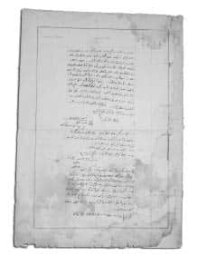
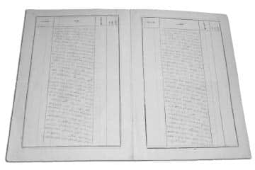

27. Alay’ın Arıburnu’na Hareketi
Bu emri alır almaz Çamburnu’ndan gelecek cebel bataryasını beklemedim. Çünkü mesafe uzakçadır. Vakit kaybedilecekti. Yalnız bu bataryanın her ihtimale karşı muhafızlığını yapmak için beklemek üzere bir bölük bıraktım. Geri kalan kuvvete hareket emrini verdim.

Şefik Beyin Arıburnu Muharebeleri’ni anlattığı raporun,
Halis Bey’de bulunan orijinal nüshası.
1. Taburu kendi ordugâhı yakınından geçen yoldan; 3. Tabur ile Makineli Tüfek Bölüğü’nü, boyun noktasından geçen diğer başlıca Kabatepe yolundan kısa sade bir emniyet tertibatı aldırarak şifahî emirle hareket ettirdim. Her iki tabura ayrı ayrı yol takip ettirmekten maksat; düşman uzakta olmadığından, alayın yürüyüş derinliğini yarı yarıya azaltmak, her iki taburla aynı zamanda hedefe karşı varmak, birlikte muharebe hattı açmak içindi. Çünkü taburları emir ve komutadan çıkmaksızın bu tarzda harekete müsaade edecek birbirine yakın yollar mevcuttu. Aynı zamanda bu hareket tarzının, düşman donanmasının gözü önünde bulunan sahayı bütün kuvvetle kısa zamanda atlamak faydası da mevcuttu.

Rapordan başka bir bölüm
Piyade birliklerini hareket ettirmeden evvel, alayda mevcut on yedi atlıdan dokuzunu keşif hizmetiyle ileriye; Arıburnu ve Kabatepe istikametine sürdüm. Aynı zamanda Palamutlusırt (Semerlitepe) müfrezesine düşmanın oralarda herhangi bir teşebbüsü olup olmadığı hakkında malumat almak üzere atlı gönderildi. Ordugâhtan hareket anında Kabatepe telefon merkezinden alınan şifahî malumattan; düşmanın yalnız Arıburnu cihetlerinde nakliye gemilerinden sürekli asker çıkarmakta olduğu ve Kabatepe ile diğer sahillerde herhangi bir çıkarma hareketi henüz vuku bulmadığı öğrenildi.
Taburlar muntazaman hareket ediyordu. Boyun noktasından aşarken düşmanın büyük-küçük çok sayıda harp ve nakliye gemisi Kabatepe-Arıburnu açıklarında görünüyordu. Düşman, bir gemisinden gözetleme için balon uçurmuştu. Donanmanın ateşi tam bu sırada üzerimize yönelseydi, epeyce bir tesir yapabilirdi. Bunu yapamadı. Bununla birlikte 1. Tabur’un geçtiği yol donanmanın görüş alanı dışındaydı ve bu yolu bu maksatla bir kaç gün önce açtırmıştım. 3. Tabur ve Makineli Tüfek Bölüğü marş marşla boyun noktası sırtını tamamen aştıktan ve donanmanın görüş alanı dışındaki ovaya indikten sonra donanmanın ateşi başladı. Fakat gerilere düşüyordu. Bir tesir yapamadı. Kabatepe’nin doğusundaki ova üzerinde her iki taburun gittikçe birbirine yaklaşan iki ayrı yol üzerindeki harekâtı donanmanın görüş alanı dışındaysa da havada dolaşmaya başlayan düşman uçaklarıyla balonundan görülmekteydi.
Uçaklar her nedense bomba atmadılar. Büyük ihtimalle yanlarına bomba almamışlardı. Askerin maneviyatı mükemmeldi. Düşmandan intikam almak hissi her fertte hâsıl olmuş ve bu his yolculuk esnasında artmıştı. Tümen emrinde, düşmanın Arıburnu ile Kabatepe arasında çıkarma hareketi yapmakta olduğu beyan edilmesinden dolayı, taburları ekte verilen krokide gösterilen yollardan Kavaktepe istikametine yürüttüm. Yol esnasında haber atlılarıyla Kabatepe’de bulunan sahil muhafazasına memur 2. Tabur komutanından düşman hakkında malumat almaya çalışıyordum.
Kavakdere’ye ulaşıldığında yaralı bir askere tesadüf ettik. Sorguladım. Subaylarının ve bir hayli arkadaşının öldüğünü ve geri kalanının gerilere çekildiğini ve çok sayıda düşmanın sahil sırtlarını (Kanlısırt, Kırmızısırt ve daha kuzeyindeki sırtları) tamamen işgal ettiği gibi daha beriye ilerlemekte olduğunu söyledi. Kavakdere’de taburlar bir hizada birbirine paralel yürüyüşüne devam ediyordu. Kavaktepe’yi oluşturan sırtlardan emniyet postaları yürütülüyordu. Kavaktepe’ye ulaşıldığında etrafı dürbünle gözetledim. Kanlı ve Kırmızı Sırtlarda ve doğu yamaçlarında bazı hareketler seçiliyordu. Seyrek ve adeta tek tük piyade ateşleri de işitiliyordu. Fakat düşmanın sağ ve sol cenah mıntıkalarının sonunu ve nerelere kadar ilerlemiş olduklarını fark etmek imkân dışıydı. Çünkü arazi fundalık ve arızalı olmakla beraber bir muharebe dahi cereyan etmiyordu. Yalnız kesin olarak kanaat hâsıl etmiştim ki düşman Kanlısırt’ı ve daha kuzeyindeki sırtları işgal ettikten başka, bu sırtların doğusundaki derelere kadar sarkmıştı. Topçular Sırtı’na ve yamaçlarına ilerleyip ilerleyemediklerini kestiremedim ise de keşif kollarından aldığım malumata göre; düşmanın henüz Topçular Sırtı’nı tutmadığını fakat o sırtlarda serbest gezilemeyip ateşe tutulduğunu haber aldım.
Kavaktepe’de taburları dört kola geçirdim. İleride 3. Tabur’u ve gerisinde 1. Tabur’u, ileriye sürülen keşif kolları ve alınan emniyet tertibatıyla Topçular Sırtı’nın doğu yamaçlarını takip ederek Göktepe’ye doğru yürüyüşe devam ettirdim. Kavaktepe’de, Kanlısırt üzerine taarruz ederek düşmana daha evvel çatmak düşüncesinin en iyi yol olduğu, düşmanın sağ cenahını yandan vurmak gibi cazibeli bir vaziyeti de ortaya çıkardıysa da bu şekilde hareket düşmanın maksadına yardımcı ve kendi maksadımıza zararlıydı. Çünkü arazi şekli ve düşmanın hareket tarzı bana öyle düşündürdü ki düşmanın maksadı Topçular Sırtı, Conkbayırı gibi; Kabatepe, Kocadere ve Anafartalar mıntıkalarına hâkim olan sırtları tutmaktı.
Bundan dolayı düşmanın sağ cenahını Kavaktepe istikametinden yandan vurmaya teşebbüs etmek; düşmana, Topçular Sırtı’nı ve dolayısıyla Conkbayırı cihetlerini teslim etmek demekti. Bu duruma sebebiyet vermekle hem alayım için hem de geriden gelecek asıl kuvvetlerimiz için çok fazla zararlı olacak ve belki Boğaz’ın bu kısımlarını tehlikeye atacak bir hataya sebep olmuş olacaktım.
İşte bu muhakeme beni Kavaktepe’den taarruza geçmekten alıkoydu. Alayın kuzeye doğru yürüyüşünü Topçular Sırtı düşmandan gizliyordu. Ben de düşmanın kuvveti ve cephesinin uzunluğu hakkında bir fikir edinebilmek için sırtın üzerinden yarı örtülü, yaya olarak hem yürüyor hem incelemede bulunuyordum. Bazen düşmanın tüfek mermilerinin yakınımdan geçtiğini vızıltılarından anlı-yordum. Düşmanın sahile yakın büyük küçük 80-90 parça harp ve nakliye gemisinin olduğunu tahmin ediyordum. Bunların içinde yalnız büyük olarak 26 adet nakliye gemisi saydığımı iyi hatırlıyorum. Sabah saat 4’ten beri çıkarma hareketine devam eden bu gemilerin çıkardığı kuvvetin büyük bir kuvvet olacağını ve bundan dolayı karşımdaki düşmanı elimdeki iki tabur kuvvetle püskürtmenin imkânsız olduğunu takdir etmekle beraber; savunma hâlinde saplanıp kalmayı da doğru bulmadım. İnceleme ve muhakemem sonucunda burada alayıma düşen görevi aşağıda anlattığım gibi tayin ettim:
Pek geniş bir cephe ile taarruza geçerek düşmanı şaşırtmak, durdurmak ve hatta düşmanın ilerleyen kısımlarını geriye atmak, kuvvetimiz gelinceye kadar Topçular Sırtı’nı, Conkbayırı’nı elde tutup düşmana kaptırmamak[2]. Karaya çıkan düşmanın tanımadığı gayet arızalı bir arazide kendini toplamadan üzerine cüretkârâne saldırmakla genel maksada hizmet edecek bir netice elde edilmiş olacağına kanaat getirdim. Atılmak hususunda bütün silah arkadaşlarımda gördüğüm şevk ve gayret ve intikam hissi bu kanaatimi takviye ediyordu.
Düşmanın Kanlısırt doğusundaki derede ve Çataldere'de görülmekte olduğu keşif kollarının verdiği bilgiden anlaşılıyordu. Taarruza mümkün olduğu kadar daha kuzeyden başlamak yani düşmanı bütün cephesinden kucaklamak ve daha hâkim bir vaziyete girmek istiyordum. Çünkü dürbünle yaptığım ve yaptırdığım gözetleme sonucunda düşmanın Kılıçbayırı'nda da olduğuna dair emareler görülüyordu. Bölükler, bölük kolu nizamında olmak üzere her iki tabur dört kol nizamında ve düşman tarafından görülmemek için Topçular Sırtı zirvesinin hemen doğusundan kuzeye doğru yürüyüşe devam ediyordu.
Yürüyüşün sol yanını temin için her iki taburdan düşman tarafına çıkarılan emniyet postaları ve keşif kolları tüfek muharebesine başlamıştı. Fakat taarruz mahallini daha kuzeyde bulmak istiyordum. Bundan dolayı bu tüfek patırtılarına ve kurşun vızıltılarına ehemmiyet verilmeyerek yürüyüşe devam edildi. Ne zaman ki ileride bulunan 3. Tabur Kemalyeri yakınına (165 rakımlı tepeye) geldi. Geride bulunan 1. Tabur dahi bu tepenin güneyindeki boyun noktası yakınına geldi. Emniyet postalarıyla keşif kollarının muharebesi artmış ve düşmanın pek yakında olduğu, birbiri arkasından gönderdikleri haberlerden anlaşılmaktaydı.
Taburların ulaştığı yukarda belirtilen noktalardan taarruza başlamaya karar verdim. Taburları durdurdum. Tahkim araç-gereci, cephane, ihtiyat yiyeceği, su matarası ve kaputtan başka askerlerin üzerindeki eşyanın (çantaların) bırakılması emrini verdim (askeri hafif bırakmak için). Aynı zamanda Topçular Sırtı'nı takiben Conkbayırı istikametine bir piyade keşif kolu gönderdim. Bu keşif kolu ile oralarda veya daha ilerilerde bulunduğunu, oradan gelen tüfek seslerinden tahmin ettiğim, geriye çekilen sahil müfrezelerimizin bakiyesine; düşmanın Kocaçimen'e ilerlemesini engellemesini ve yardım kuvveti gelinceye kadar kesinlikle sebat etmesi emrini gönderdim.
Bu sırada Fundalıksırt-Mersinderesi üzerlerinde düşmanın varlığı görüldüğü haberleri keşif kollarından geliyordu. Taarruza başlamak üzere bulunduğum şu sırada Çamburnu'ndan gelecek olan cebel bataryası henüz bize katılmadığı gibi gelmekte olduğuna delalet eder uzaklarda, yollarda bir emare de görünmüyordu. Bataryanın bir an evvel erişmesi için birbiri arkasından emirberler gönderiyordum.
Tam bu sırada -askerin çanta çıkarmakta olduğu sırada- tek bir top geldi. Bu top, ekteki krokide gösterildiği üzere Kanlısırt'ın işaret olunan noktasında Kabatepe açıklarına ve mıntıkasına yöneltilmek suretiyle; gerektiğinde Arıburnu açıklarına karşı ateş açmak üzere, birkaç aydan beri mevzii olarak yerleştirilen 9. Alay 3. Tabur 7. Cebel Bölüğü bataryasının bir topuydu. Bu batarya, fecir vakti düşmanın Arıburnu'na icra ettiği çıkarma hareketine karşı vazifesini yerine getirirken ansızın düşman piyadesinin baskınına uğramış ve bir topunun mürettebatının, diğer topunun yükletilirken hayvanlarının vurulması sebebiyle üç topun namlusu ve bazı aksamı kurtarılamayarak düşmanın eline geçmiş ve ancak bir top kullanılabilecek bir halde kurtarılmış ve Kocadere istikametine çekilmiş; alayımızın gelmesi üzerine geri dönerek kuvvetimize katılmıştı. (Düşmanın eline geçen bu üç topun, 27. Alay'a şeref veren kahramanca süngü hücumlarıyla düşmanın elinden kurtarıldığı aşağıda arz edilecektir.)
Düşmanın cephesini 2 bin metreye yakın görüyor ve bu uzunluğa kıyasla kuvvetini 10 bin ila 15 bin raddesinde tahmin edebiliyordum. Yaratana sığınarak aşağıdaki taarruz emrini iki tabur ve makineli tüfek bölüğü ve bir tek top komutanına şifahen verdim:
Şifahî verilen taarruz emri
1- Düşmanın sol cenahı yaklaşık -el ile işaret edilmiş- Kılıçbayırı sırtlarında (dâhil), sağ cenahı Kanlısırt (dâhil), düşmanın ilerlemiş olan kısımları önümüzdeki dereyi (Çataldere ve bunun Kanlısırt doğusundaki kısmı) zapt etmiştir. Ve üzerinde bulunduğumuz sırtlara doğru (Topçular Sırtı’na) ilerlemektedir.
2- 1. Tabur, Kırmızı ve Kanlısırt istikametine taarruz edecektir (Bu sırtlar o zaman isimleri olmadığından el ile işaret olunmuştur). 3. Tabur, Kırmızısırt’tan (hariç) itibaren düşmanın sol cenahına taarruz edecektir. İrtibat 1. Tabur’dan.
3- 1. Tabur bir bölüğünü yanımda ihtiyat olarak bırakacaktır.
4- Topçu, görünmeden bulunduğumuz tepeden (165 rakımlı tepe),
5- Makineli Tüfek Bölüğü, bu tepenin güneyinden, ateşleriyle taarruzu himaye edecektir.
6- Ben, topçu ve makineli tüfeğin başında bu tepede bulunacağım.
7- Muharebe ağırlık hayvanlarından lüzumu kadarı burada alıkonularak diğerleri, yükü indirilerek cephane getirmek üzere Bigalı cephaneliğine gönderilecektir. Bigalı’dan gelecek cephane, bu tepenin (165 rakımlı tepe) gerisinde bulundurulacaktır. Taburlar cephanelerini buradan alıp ikmal edecektir. Büyük ağırlık hayvanlarından ordugâhta boşta bulunanlar da Bigalı’dan cephane getirecektir.
8- Taburların sargı mahalleri bu tepenin gerilerinde Kocadere köyüne giden yol kenarında bulunacaktır.
Aynı zamanda aşağıda yazılı olan raporu 9. Tümen Kumandanlığı’na takdim ettim:
Arıburnu ile Kocadere arasındaki sırtlardan
25 Nisan 1915, öğleden önce saat 7.55